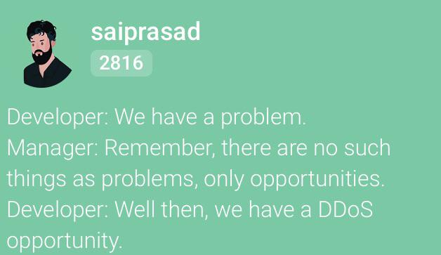

| Question # | Answer |
|---|---|
| A | I liked using google drive. I had a chance to use Github Classroom and like that better. The only disadvantage was collaberation other than that it worked well to get up to date information and host our information. |
| B | I would definetly prefer all course materials to be on google drive in comparison to Canvas or Blackboard |
| C | Working in groups was nice when I was sick and needed to rely on someone to get some work done. I did not really learn anything from my group and towards the end of the semester there were a couple of disappointing circumstances. I feel overall everyone pulled their weight. |
| D | The tests were perfect and played on the group work well. I feel they all had one or two things that were a little fun to figure out. I would classify them as just right. The work load was just right as well. |
| E | I had no trouble installing XAMPP on my personal computer. On my work computer I had to troubleshoot and give a a different Port. |
| F | I gave up on the virtual machine. It was terrible and would freeze or tell me applications were crashing. |
| G | I liked this course much better than an online course. Having a lecture session and time to work and ask questions made it easier to troubleshoot and work through issues. |
| H | I am happy with the coverage of the course. However, I would have like to breifly touch on other Databases other than MariaDB |
| I | I think it would be cool to use the sakilla DB to analyze data or trends and get a small glimpse into some analysis or trends |
| J |  |